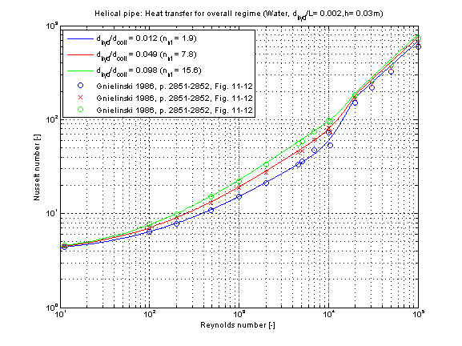

kc_overall |
|
Information
This information is part of the Modelica Standard Library maintained by the Modelica Association.
Calculation of the mean convective heat transfer coefficient kc of a helical pipe in a hydrodynamically developed laminar and turbulent flow regime.
Functions kc_overall and kc_overall_KC
There are basically three differences:
- The function kc_overall is using kc_overall_KC but offers additional output variables like e.g. Reynolds number or Nusselt number and failure status (an output of 1 means that the function is not valid for the inputs).
- Generally the function kc_overall_KC is numerically best used for the calculation of the mean convective heat transfer coefficient kc at known mass flow rate.
- You can perform an inverse calculation from kc_overall_KC, where an unknown mass flow rate is calculated out of a given mean convective heat transfer coefficient kc
Geometry and Calculation
This heat transfer function enables a calculation of heat transfer coefficient for laminar and turbulent flow regime. The geometry, constant and fluid parameters of the function are the same as for kc_laminar and kc_turbulent.
The calculation conditions for laminar and turbulent flow is equal to the calculation in kc_laminar and kc_turbulent. A smooth transition between both functions is carried out between 2200 ≤ Re ≤ 30000 (see figure below).
Verification
The mean Nusselt number Nu representing the mean convective heat transfer coefficient kc is shown below for different numbers of turns n_nt at constant total length of the helical pipe.

The convective heat transfer of a helical pipe is enhanced compared to a straight pipe due to occurring turbulences resulting out of centrifugal forces. The higher the number of turns, the better is the convective heat transfer for the same length of a pipe.
Note that the ratio of hydraulic diameter to total length of helical pipe d_hyd/L has no remarkable influence on the coefficient of heat transfer kc .
References
- GNIELINSKI, V.:
- Heat transfer and pressure drop in helically coiled tubes.. In 8th International Heat Transfer Conference, volume 6, pages 2847?2854, Washington,1986. Hemisphere.